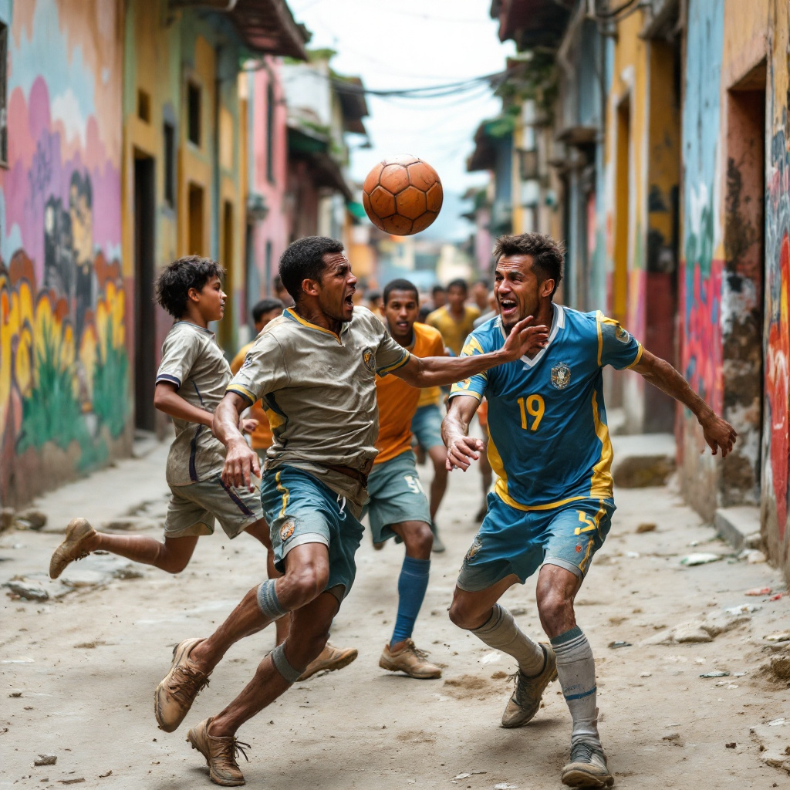
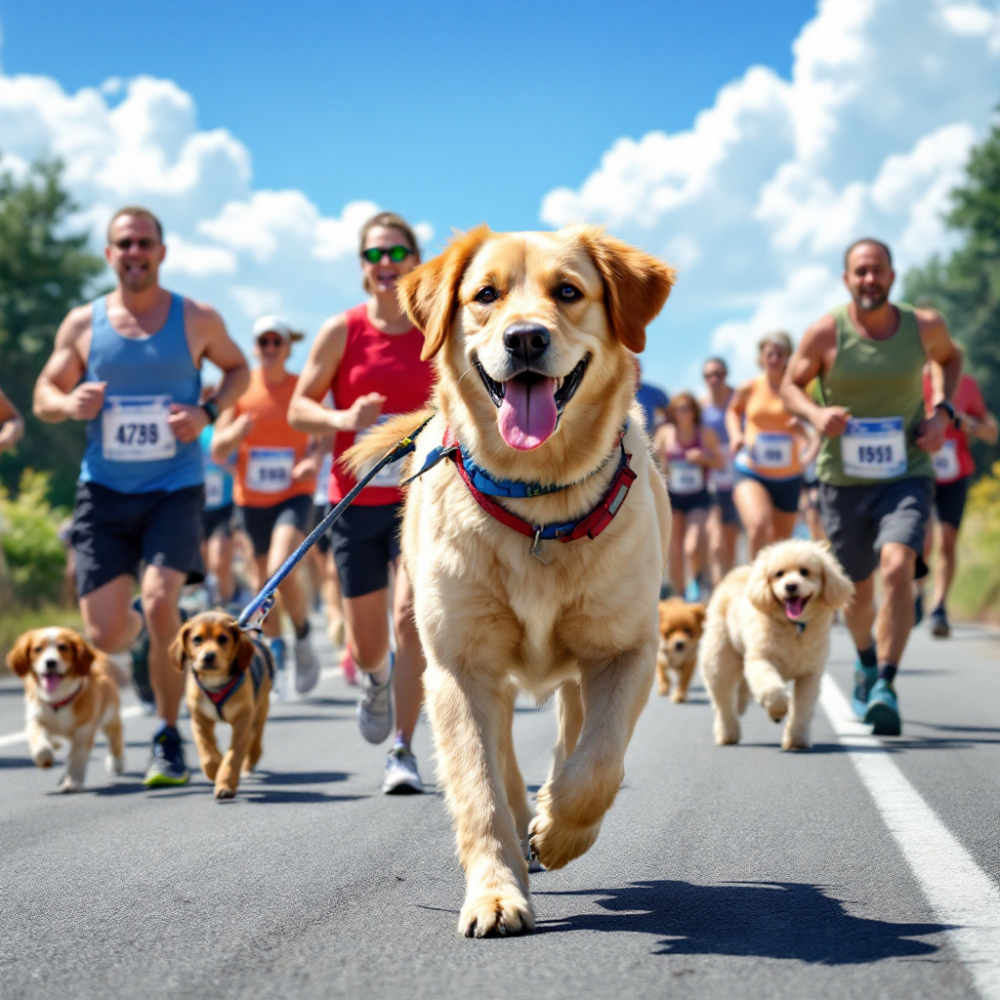
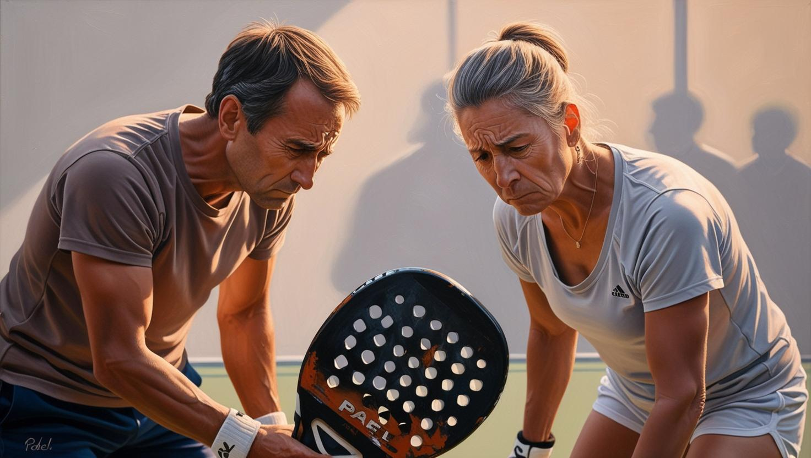

📰 Valparaíso albergará el primer torneo de fútbol callejero del puerto

Valparaíso, 28 de marzo de 2025 — Este fin de semana, las calles de Valparaíso se transformarán en canchas de fútbol con la celebración del Primer Torneo de Fútbol Callejero. El evento, organizado por la Municipalidad y diversas agrupaciones deportivas locales, reunirá a equipos de jóvenes de toda la ciudad para competir en partidos informales pero llenos de pasión.
El torneo busca promover la actividad física y la integración social en los barrios de la ciudad. Las inscripciones son gratuitas y abiertas a equipos amateurs, con premios para los mejores jugadores y equipos.
El torneo se llevará a cabo en el sector del Cerro Alegre, donde se instalarán varias canchas improvisadas. Se espera la participación de más de 20 equipos, convirtiendo a Valparaíso en el epicentro del fútbol callejero durante todo el fin de semana.
📰 Valparaíso organiza su primera maratón con mascotas

Valparaíso, 28 de marzo de 2025 — Este domingo, Valparaíso vivirá una jornada única con la Primera Maratón con Mascotas, un evento que invita a los residentes a participar junto a sus perros y gatos en una carrera por la ciudad. El recorrido de 5 kilómetros, que abarcará desde el puerto hasta el Cerro Concepción, está diseñado para que tanto los humanos como sus mascotas disfruten del ejercicio y el aire libre.
El evento, que contará con categorías para distintos tipos de mascotas y dueños, tiene como objetivo fomentar el bienestar animal y promover la convivencia en comunidad. Además de la carrera, habrá actividades para mascotas, como concursos de disfraces y demostraciones de adiestramiento.
Las inscripciones están abiertas, y los organizadores esperan una gran participación, ya que se ha convertido en una actividad esperada por los amantes de los animales. Todos los fondos recaudados serán destinados a organizaciones locales de protección animal.
📰 ¿Por qué ya nadie juega pádel? Un análisis de su declive en Valparaíso

Valparaíso, 28 de marzo de 2025 — El pádel, un deporte que hace unos años capturaba la atención de miles de fanáticos en Valparaíso y en todo Chile, parece estar pasando por un declive inesperado. Las canchas que antes se llenaban de jugadores, ahora están vacías, y los clubes que solían tener largas listas de espera para sus horarios, se ven vacíos.
Pero, ¿qué ha sucedido con el pádel? En el pasado, este deporte se popularizó rápidamente en la ciudad, atrayendo a jóvenes y adultos por su accesibilidad y por ser una alternativa al tenis. Sin embargo, expertos y jugadores coinciden en varias razones que explican su caída en popularidad.
1. Falta de innovación y competencia con otros deportes
El pádel, aunque divertido, no ha evolucionado mucho en los últimos años en términos de reglas, tecnología o nuevas formas de promoción. Otros deportes como el fútbol, el running e incluso el tenis han sabido adaptarse a las nuevas tendencias, creando experiencias más atractivas para los jóvenes, mientras que el pádel ha quedado algo estancado.
2. Costos y falta de infraestructura
Las canchas de pádel no son tan baratas de mantener como las de otros deportes populares. En Valparaíso, algunas instalaciones han cerrado por problemas financieros o por falta de jugadores. La entrada a estos espacios puede ser costosa, especialmente para las personas que buscan opciones deportivas más accesibles.
3. Cambio en las preferencias deportivas
Hoy en día, los jóvenes se sienten atraídos por deportes que se perciben como más dinámicos o sociales, como el fútbol sala, el skateboarding o incluso el surf. Además, el auge de los gimnasios y deportes de alto impacto, como el CrossFit, ha desviado a muchos de los aficionados del pádel hacia otras alternativas que ofrecen una mayor variedad de actividades en un solo lugar.
4. El impacto de la pandemia
La crisis sanitaria provocada por la pandemia de COVID-19 también jugó un papel importante en el declive. Durante el confinamiento, muchas personas descubrieron nuevas formas de ejercitarse en casa, lo que redujo aún más el interés por actividades en espacios cerrados como las canchas de pádel.
5. Falta de visibilidad mediática
A diferencia de otros deportes, el pádel no ha logrado captar una gran atención mediática a nivel nacional, lo que limita la exposición a nuevos públicos. La cobertura de eventos y campeonatos de pádel sigue siendo limitada, lo que hace difícil que las nuevas generaciones se interesen por él.
Aunque algunos clubes de pádel en Valparaíso siguen existiendo, las perspectivas no son tan optimistas. Los expertos sugieren que, para revitalizar el deporte, se necesitaría un esfuerzo conjunto para generar mayor visibilidad y adaptarse a los cambios en las preferencias de los jugadores.
El futuro del pádel en la ciudad parece incierto, pero muchos siguen esperando un posible resurgimiento si se logran cambiar las dinámicas que llevaron a su caída.
 Diario El Faro
Diario El Faro